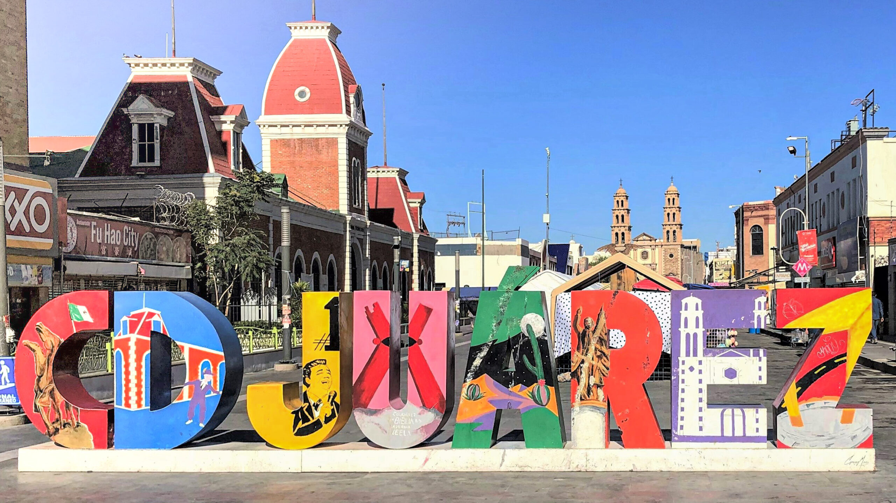
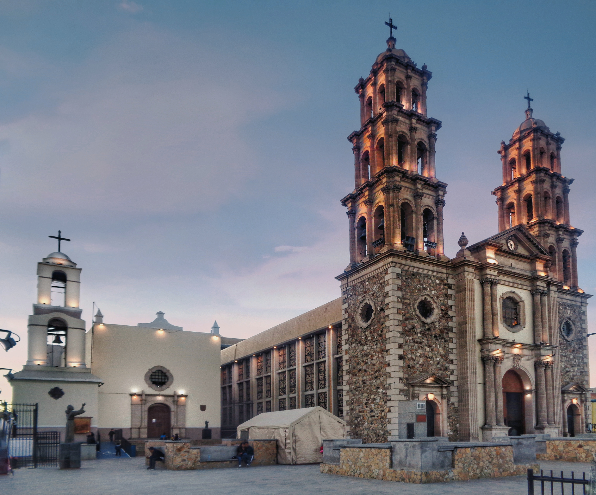
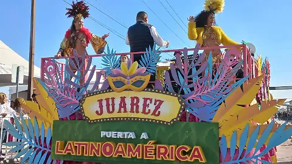
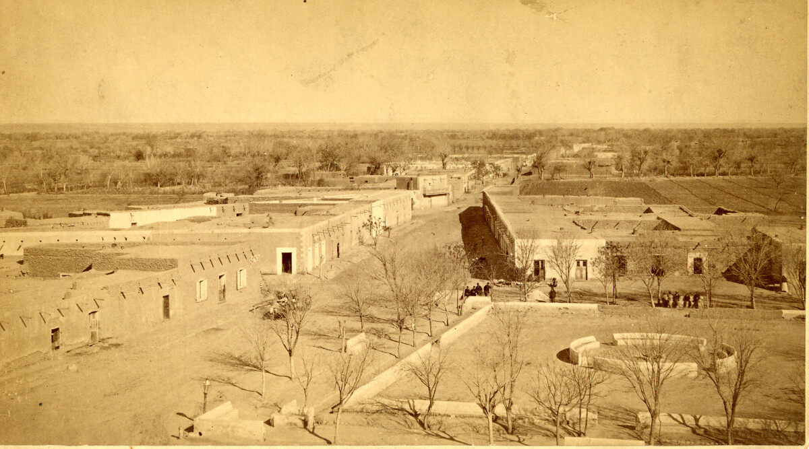

Principal
evento cultural se lleva a cabo generalmente a finales de año, como en noviembre y diciembre, para celebrar el aniversario de la ciudad, que fue fundada el 8 de diciembre de 1659. La celebración incluye una gran variedad de actividades gratuitas como música, teatro, danza, talleres y exposiciones, además de un desfile conmemorativo que recorre las principales calles de la ciudad y culmina en la plaza principal.
Fundacion de ciudad juarez
El Festival de la Fundación de Ciudad Juárez es un evento cultural anual que celebra la historia y la cultura de esta ciudad fronteriza en el estado de Chihuahua, México. Este festival incluye una variedad de actividades como conciertos, exposiciones de arte, presentaciones teatrales, y eventos gastronómicos que destacan la rica herencia cultural de Ciudad Juárez.
El Festival de la Fundación
Cada año, en el mes de diciembre, Ciudad Juárez celebra el aniversario de su fundación con un festival cultural. Este evento reúne a la comunidad con música, danza, teatro, exposiciones, talleres y un desfile conmemorativo, recordando la importancia histórica de la ciudad.
Historia de Ciudad Juárez
Ciudad Juárez, originalmente conocida como El Paso del Norte, fue fundada el 8 de diciembre de 1659 por el misionero franciscano Fray García de San Francisco. La ciudad se estableció como un punto estratégico para la expansión española en el norte de México y sirvió como un importante centro comercial y cultural a lo largo de los siglos.
